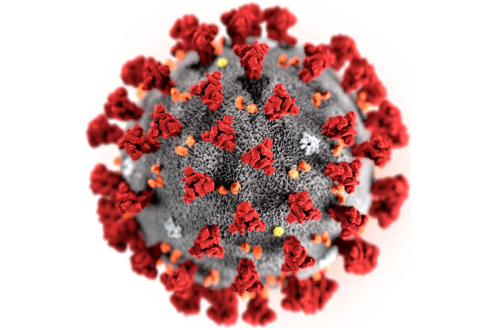
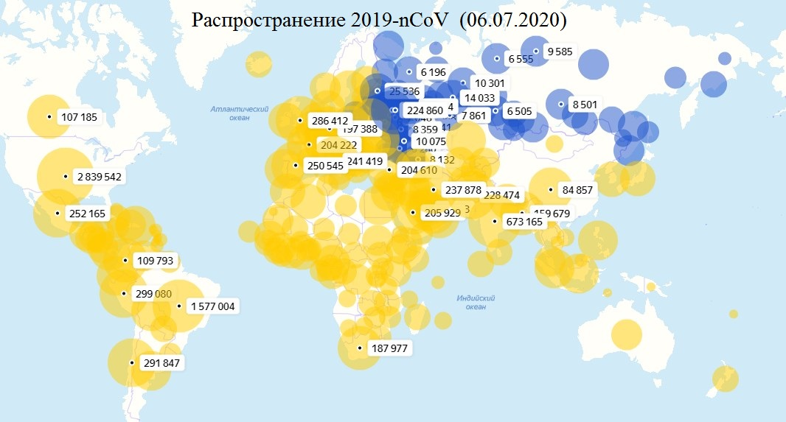

SARS-CoV-2

SARS-CoV-2 (Severe acute respiratory syndrome coronavirus 2), он же 2019-nCoV (2019-Novel Coronavirus) – штамм коронавируса, из рода бетакоронавирусов (Betacoronavirus), обнаруженный в конце 2019 года у больных с пневмонией в Китае и по состоянию на начало 2020 года получивший широкое распространение по всему миру
9 февраля 2020 года Государственный комитет по здравоохранению КНР назначил для болезни, вызванной китайским коронавирусом SARS-CoV-2 новое временное название — NCP (Novel Coronavirus Pneumonia), что в переводе означает «пневмония, вызываемая новым типом коронавируса».
11 февраля 2020 года Всемирная Организация Здравоохранения назначила официальное название для болезни, которую вызывает SARS-CoV-2 — «Коронавирусная инфекция COVID-19» (COrona VIrus Disease 2019), или просто, «COVID-19».
По структуре — SARS-CoV-2 является одноцепочным РНК-содержащим вирусом, который вызывает заболевания дыхательной системы человека. В связи с этим, главные клинические проявления китайского коронавируса – выраженное воспаление, покраснение и отечность в дыхательных путях, что при осложненном течении может приводить к пневмонии, удушью и летальному исходу. Среди же симптомов преобладают — лихорадка, слабость, кашель, головная и мышечная боль.
Несмотря на инкубационный период в 2-10 дней, инфицированный человек становится заразным для окружающих еще до появления первых признаков болезни. В связи с этим, в эпидемиологических целях г. Ухань и его округа были закрыты на карантин. Позже количество городов на карантине увеличилось.

30 января 2020 года ВОЗ признала новый коронавирус чрезвычайной ситуацией международного значения.
11 марта 2020 Всемирная Организация Здравоохранения назначила для COVID-19 статус — пандемия.